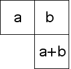
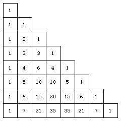

| Pascal's triangle is familiar from the study of algebra and combinatorics. |
| Though sometimes presented as an equilateral triangle, for our purposes a right isosceles format is better. |
| Make a triangular array of boxes and fill each box of the left and right sides with 1s. |
| Starting from the top, fill every other box with the sum of the entries in the box immediately above, and immediately above and to the left. |
|  |
| Here are the first few rows. |
|  |
Return to Background.